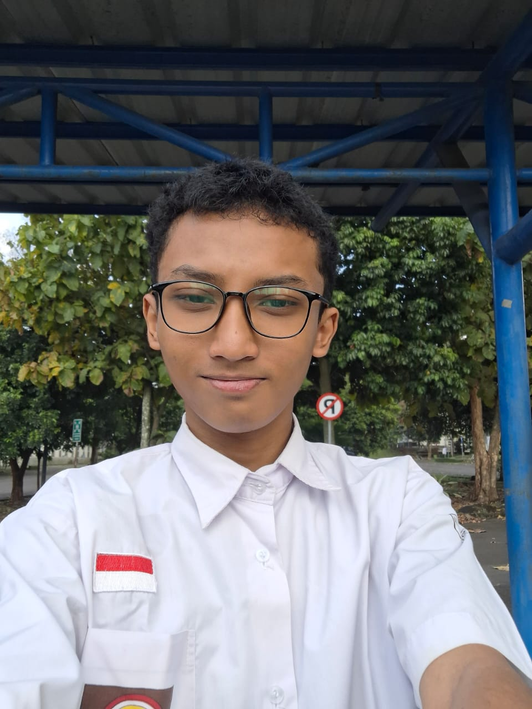

Data Diri
Nama: Wafi Ahlam Rizqulloh
Deskripsi: Halo, aku Wafi asal depok Jawa Barat, kini sedang berkuliah di Politeknik Negeri Bandung. Hobi yang aku miliki hanya satu saat ini yaitu bermain catur. Pandangan hidup yang aku miliki tetaplah berada di jalan yang benar, sekalipun hidup tidak menjamin kebahagiaan dan kesenangan yang terpenting adalah tetap hidup, jangan lupa mencintai kedua orang tua.
Daftar Keterampilan
- Dapat menggunakan Word dengan proper.
- Dapat memahami bagaimana manusia bertingkah (Psikologis).
- Dapat menggunakan Bahasa C (intermediate).
- Dapat menggunakan HTML dan CSS secara intermediate.
Riwayat Pendidikan
- SD: SDIT UMMU'L Quro Depok (2011-2017)
- SMP: SMPIT Ummu'l Quro Depok (2017-2020)
- SMA: SMA Negeri 14 Depok (2020-2024)
- Kuliah: Politeknik Negeri Bandung (2024-selesai)
Daftar Proyek
Simulasi ATM: Bersama rekan saya (Farell), membuat simulasi ATM menggunakan Bahasa C.
Game Tetris Modern: Bersama kelompok, membuat simulasi game Tetris modern juga menggunakan Bahasa C.